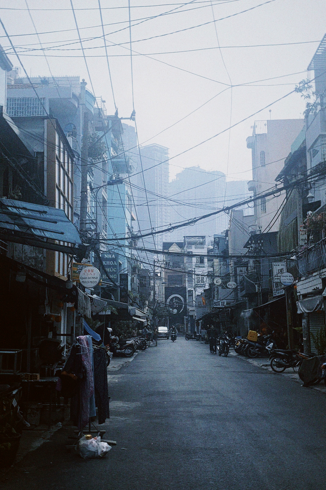

currently - january 2025
I’m currently in Vietnam, arrived at the beginning of the year and will stay mostly in Ho Chi Minh City until spring.
I’ve been focused on getting work started great this year, doubling down on relationships with certain clients while moving away from others.
I’m writing much more and have this ambition of building this site as a repository for all things not necesserally work related.
I want to share some thoughts and other things that are central in my life like living abroad, living sober, staying creative and and the intersectionality of it all.
